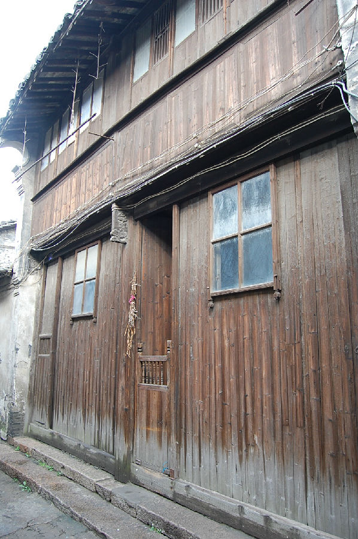
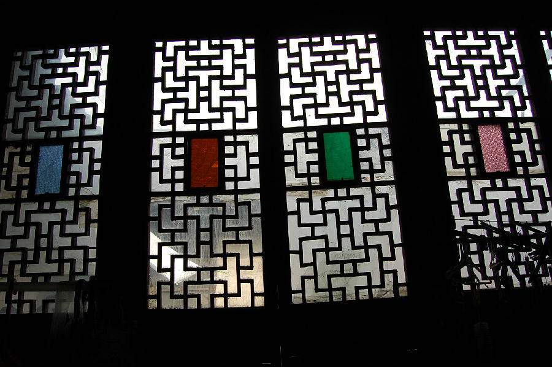

嘉兴市文物保护网 · 市级文物保护点 · 2020-11-06 · 原文


西北大街10～12号徐氏老宅位于嘉兴市秀洲区新塍镇西北大街10～12号，据村民介绍为民国时期建造，坐北朝南，原有四进，现存三进,占地面积331平方米。一进为二层二开间楼房，木梁架结构，用料较大，穿斗式和抬梁式并有，屋顶为硬山顶，山墙用青砖砌成，门窗等处有雕刻，地面铺设小青砖。二进前有进深4.8米的天井，天井两侧有厢房、南侧原有砖雕门楼（现已毁）。二进为一层二开间，木梁架结构，用料较粗大，有冬瓜梁、抬梁式，有阁楼，阁楼地板间做了隔层，地面铺设方砖。房屋西侧有弄堂直通到三进，三进前可见进深4.4米的天井，三进为一层三开间，木梁架结构，地面铺设小青砖，现作厨房和堆放杂物所用。三进后另有一个小天井。现住户介绍，该宅是当时从他人名下买下后对其门窗进行了改造，二进阁楼的隔层，据说是以前藏鸦片之用。老宅建筑具一定规模，用料粗大，做工考究，在嘉兴现有的民国时期乡土建筑中属精品，具有较高的历史价值。2009年公布为嘉兴市文物保护点。